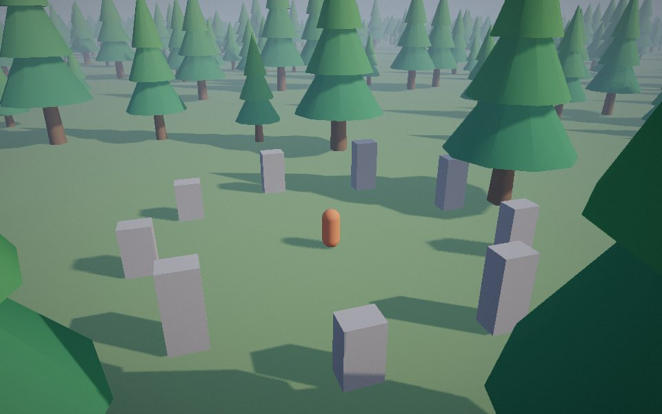
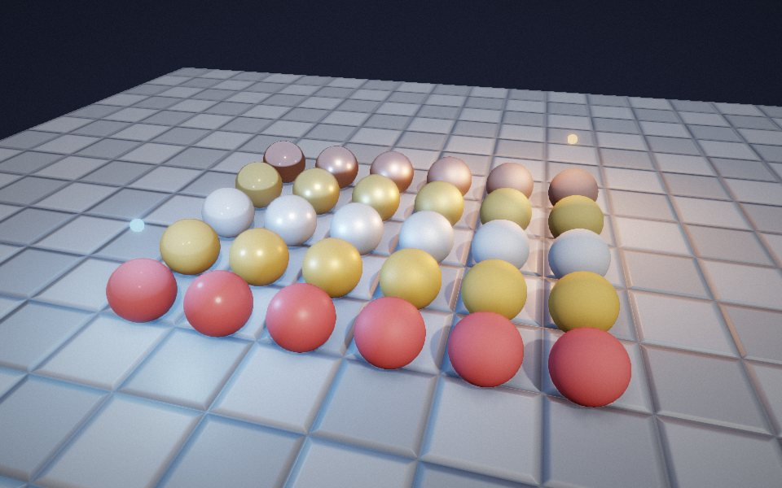
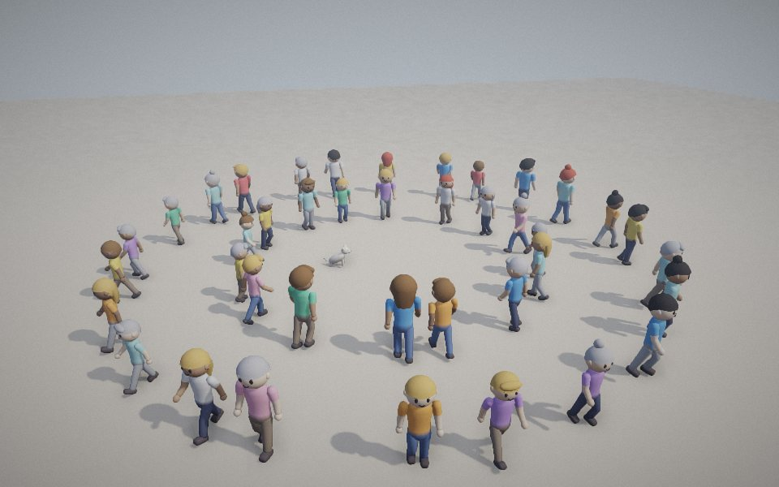
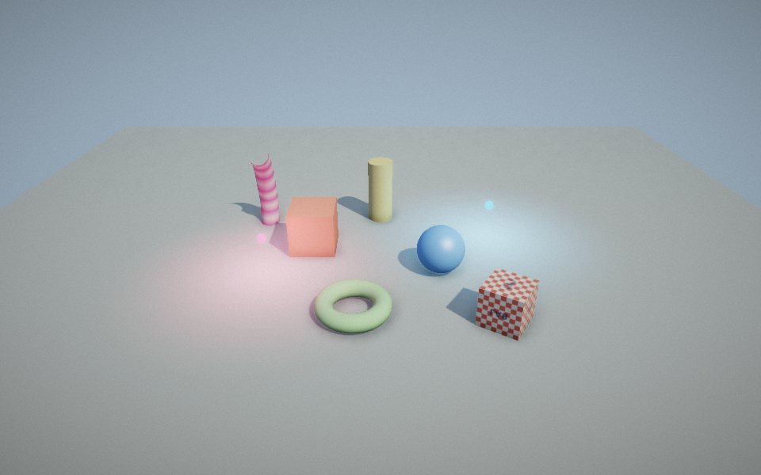
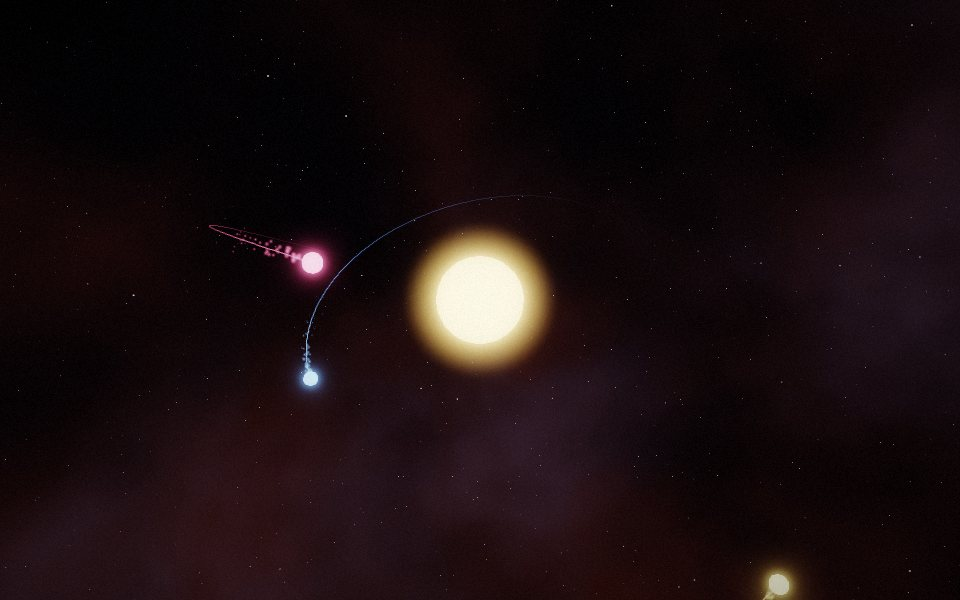
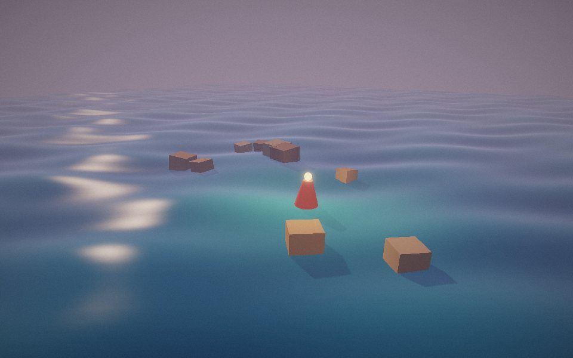
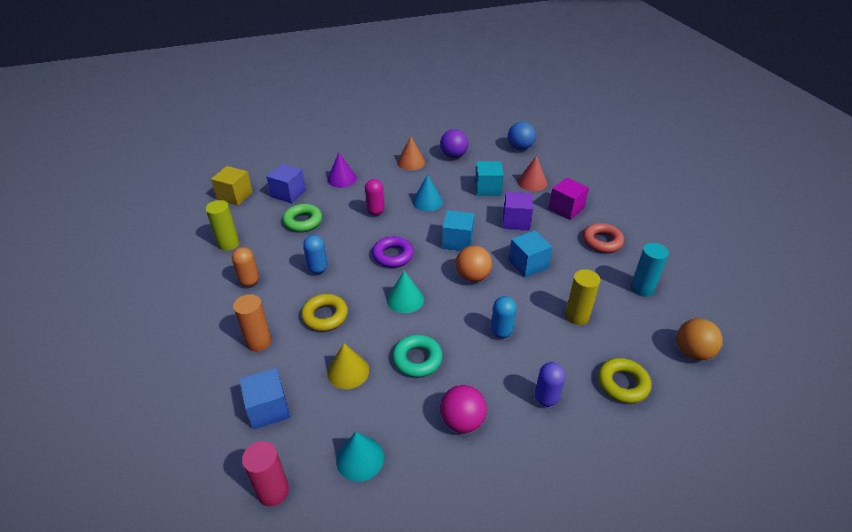
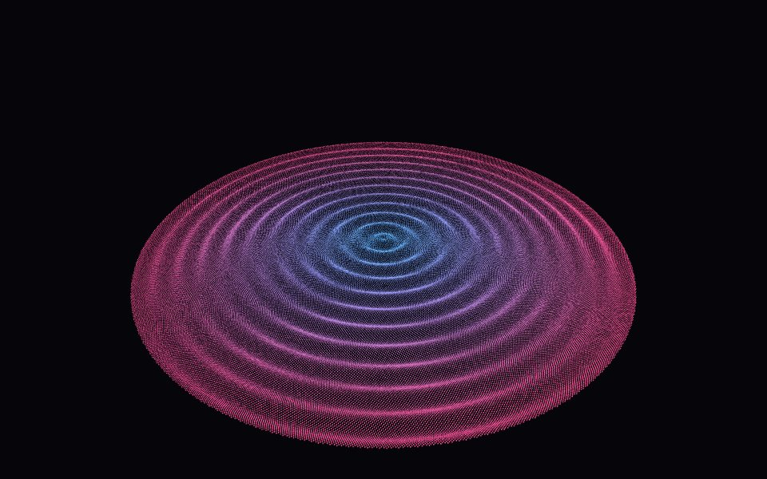
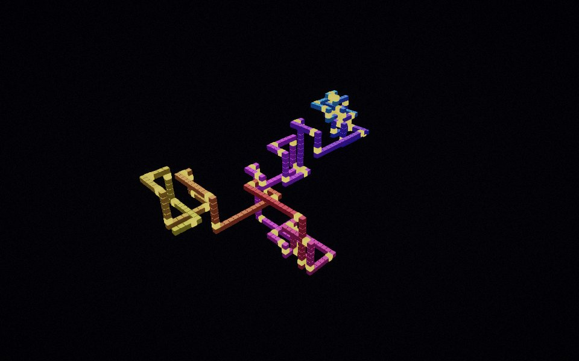
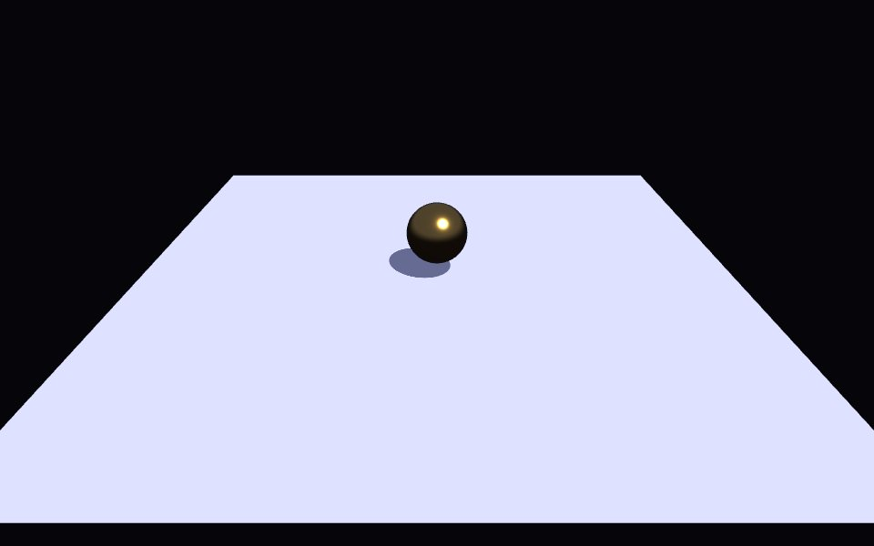

Examples
Each one is a single HTML file with its script inline. Open it, then view the source: that is the whole example.

Open world
Walk through a 480 m forest. Shadows stay sharp near you and reach the horizon; what you can't see isn't drawn.
ShadowMap cascades, culling, Entity.lod, slideCircle, TouchControls

Materials
Thirty spheres from plastic to metal and from mirror to chalk, on a floor whose bevels are a normal map.
PBRMaterial, normalMap, point lights, ambient occlusion

Characters
Forty animated people from one glTF file. One skeleton, one material, a palette each.
loadGLTF, SkinnedMesh, Animator, palettes

Lit scene
The light system with switches: sun shadows, point lights and ambient occlusion on and off.
StandardMaterial, ShadowMap, PostFX, Texture

Particles and bloom
Comets, trails and bursts over a procedural sky. Click for more.
ParticleSystem, Trail, GlowMaterial, Sky, bloom

Custom shader
Rolling water in your own GLSL that still takes the scene's sun, lamp, shadows and fog.
ShaderMaterial, projection and lighting chunks

Picking
Point at a shape. A ray from the camera finds the triangle under the pointer.
Camera.screenRay, Scene.raycast, Tweens

Instancing benchmark
Up to 200,000 cubes in one draw call, with live numbers.
InstancedMesh

Prime Walk 3D
Step once per integer, turn at every prime. The demo the project began with.
InstancedMesh, self-lit instances, bloom

First scene
The dozen lines from the front page, running.
Game, Entity, Mesh